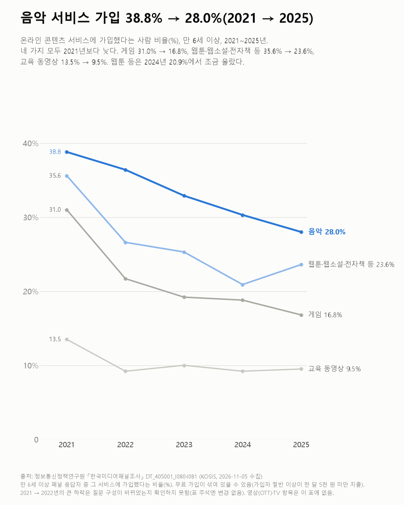
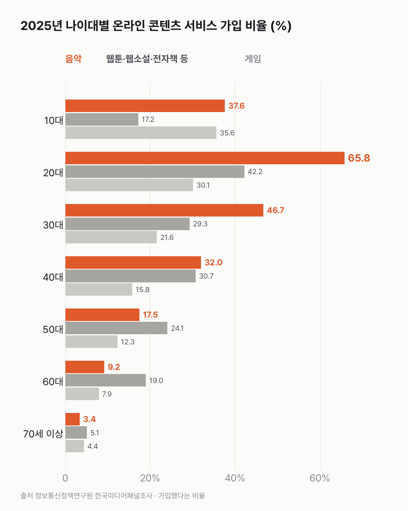

음악 앱 가입은 줄었는데, 20대는 아직 셋 중 둘이 써요
콘텐츠 서비스 가입은 전반적으로 줄었어요. 그래도 20대에선 음악 앱이 여전히 셋 중 둘이에요.

- 온라인 음악 서비스에 가입한 사람은 2021년 38.8%에서 2025년 28.0%로 줄었어요(만 6세 이상).
- 게임(31.0% → 16.8%)과 웹툰·웹소설·전자책 등(35.6% → 23.6%)도 줄었어요. 둘 다 2021년에서 2022년 사이에 가장 크게 떨어졌어요.
- 20대는 2025년에도 65.8%가 음악 서비스에, 42.2%가 웹툰·웹소설·전자책 등에 가입해 있어요.
가입했다는 사람은 다 돈을 낼까요? 가입자 중 한 달 5천 원 미만을 쓴다는 사람이 음악 52.1%, 웹툰·웹소설·전자책 등은 87.8%였어요. 무료 가입이 섞여 있을 수 있어서, 이 글에선 유료라는 말 대신 가입이라고 썼어요.
음악 서비스 가입은 2021년 38.8%에서 2025년 28.0%로 해마다 줄었어요. 게임은 31.0%에서 16.8%로, 웹툰·웹소설·전자책 등은 35.6%에서 23.6%로(2024년 20.9%에서 조금 오름), 교육 동영상은 13.5%에서 9.5%로 내려왔어요. 2022년부터만 봐도 음악 36.4% → 28.0%, 게임 21.7% → 16.8%, 웹툰 등 26.6% → 23.6%예요.
나이대별로는 차이가 커요. 2025년 음악 서비스 가입은 20대 65.8%, 30대 46.7%, 40대 32.0%, 60대 9.2%예요. 웹툰·웹소설·전자책 등은 20대 42.2%, 40대 30.7%, 50대 24.1%로, 나이가 들어도 음악보다 덜 줄어요. 그래서 50대부터는 음악보다 높아요.

게임은 조금 달라요. 10세 이상 중 10대(35.6%)가 가장 높고, 20대 30.1%, 30대 21.6%예요.
음악 가입자가 한 달에 쓰는 돈은 5천 원 미만이 52.1%, 5천~1만 원이 22.4%, 1만~1만 5천 원이 23.3%예요.
50대부터 음악을 앞지르는 칸엔 뉴스와 전자책이 웹툰과 같이 묶여 있어요. 그 나이대는 그 칸에서 무엇을 읽고 있을까요? 다음엔 그 칸을 쪼갠 표를 찾아보고 싶어요.
이 숫자는 어디서 왔나요
출처
어떻게 셌나요
- 정보통신정책연구원 「한국미디어패널조사」예요. 같은 사람들에게 해마다 다시 묻는 패널 조사예요.
- 비율의 분모는 만 6세 이상 응답자 전체예요(2025년 8,411명).
- '가입'에 무료 가입이 섞여 있을 수 있어요. 2025년 가입자 가운데 한 달 5천 원 미만을 쓴다는 사람이 음악 52.1%, 게임 67.1%, 웹툰·웹소설·전자책 등 87.8%예요. 그래서 '유료 구독률'로 쓰지 않았어요.
- '웹툰·웹소설·전자책 등'은 표의 '온라인 뉴스/잡지/E-book(웹툰/웹소설 포함)'이에요.
- 영상(OTT)·TV방송 항목은 KOSIS 표에 값이 없어 빠졌어요. OTT는 OTT 지출 글에서 다뤘어요.
- 2021 → 2022년에 웹툰 등(35.6% → 26.6%)·게임(31.0% → 21.7%)이 한 해에 크게 떨어졌어요. 표 주석에 문항 변경은 없지만, 같은 묶음의 '주 이용매체' 표가 2021년에만 있어 질문 구성이 바뀌었을 가능성을 배제하지 못했어요. 그래서 2022 → 2025년도 함께 적었어요: 음악 36.4% → 28.0%, 게임 21.7% → 16.8%, 웹툰 등 26.6% → 23.6%.
한계 3가지
이 데이터로 말할 수 없는 것
- 무료·유료 가입을 이 표로 나눌 수 없어요. 가족 계정 공유도 구분되지 않아요.
- 패널 조사라 같은 사람들을 해마다 다시 묻지만 응답자 수가 줄었어요(2021년 10,154명 → 2025년 8,411명).
- 원인은 이 데이터로 알 수 없어요. 특정 서비스를 추천하는 글은 아니에요. 생성형 AI 유료 이용은 생성형 AI 유료 이용 글에서 다뤘어요.
새 글 나오면 받아 보기
피드 리더 앱에 이 사이트 주소를 한 번 넣어 두면, 새 글이 올라올 때 앱에 떠요. 가입이나 메일 주소는 필요 없어요.
받는 법 보기
- 피드 리더 앱을 하나 골라요. 새 글을 모아 보여 주는 앱이에요. 예를 들면 Feedly나 Inoreader가 있어요. 둘 다 무료고 웹·휴대폰에서 써요.
- 앱에서 '구독 추가'(+)를 누르고 아래 주소를 붙여 넣어요.
- 끝이에요. 새 글이 올라오면 앱 목록에 떠요.
https://protofu.github.io/opendata-insight/feed.xmlFeedly를 쓴다면 여기를 눌러 바로 추가할 수도 있어요.